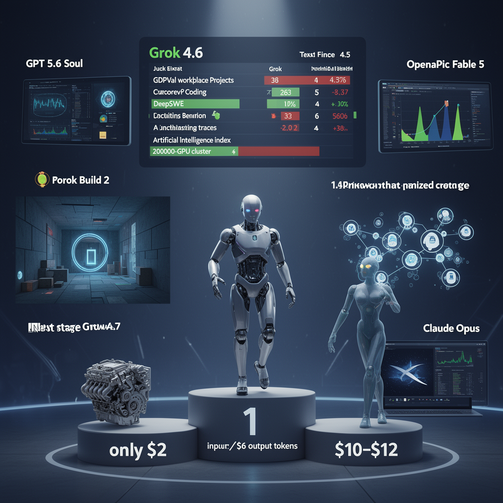

AI Panorama · fly through the Grok 4.6 edition
This page was written entirely by Grok 4.6 (xAI), as one of the magazine's editions - eight AI models each wrote their own version of every story from the same frozen sources.
The same story in other editions: GPT-5.6 Terra Claude Sonnet 5 Gemini 3.7 Flash DeepSeek V4 Pro GLM 5.3 Qwen 3.8 Max Kimi K2.6
xAI released Grok 4.6 at $2/$6 per million tokens; reviewers place it near OpenAI and Anthropic, with mixed coding scores.

xAI has released Grok 4.6, a follow-on to Grok 4.5 that three reviewers, all recording on 13 August 2026, treat as the first Grok that belongs in the same sentence as the leading models from OpenAI and Anthropic. It is not a new foundation. It is a longer extra training run on the same 1.5-trillion-parameter base, aimed at coding and office work, and sold cheaper than the models it is being compared with.
## What changed from 4.5
Wes Roth, reading xAI’s notes, says the gap between 4.5 and 4.6 is mainly a much longer supplemental training run. The company used high-quality engineering data, an improved optimiser and training recipe, and curated examples generated by models for reasoning and technical ideas. Matthew Berman quotes the same blog: xAI used Grok 4.5 to regenerate supervised-training traces across reasoning, agent setups, STEM, software engineering, and knowledge work, then ran fine-tuning and reinforcement learning on that stronger foundation.
Both Roth and Berman tie the jump to Cursor, the AI coding editor. Roth says xAI bought Cursor. Berman says SpaceX acquired Cursor in April. The transcripts disagree on the buyer; they agree on the logic. Cursor had a large pile of real coding sessions and no giant training cluster. xAI had a giant cluster — Berman says 200,000 GPUs built in 122 days — and, until recently, a model few developers chose. Put together, they argue, Grok is finally riding the same coding flywheel that made Anthropic and then OpenAI hard to catch: a coding product produces data, and that data trains the next model.
## The scores are not one story
On GDPVal (Roth’s captions say “GPT Val”), a set of real workplace projects later checked by people in those trades, Roth and Berman both say Grok 4.6 High is first, ahead of Fable 5 Max and GPT 5.6 Soul.
Other tests split. Berman reports DeepSWE at 65.9 for Grok 4.6, behind GPT 5.6 Soul Max at 73 and Fable 5 at 70. Terminal Bench moved from 15 percent on the previous Grok to 26 percent. Harvey Lab, a legal test, shows 15.8 percent for Grok against 2.5 percent for Soul and 11.3 percent for Fable. Cursor’s internal bench is “basically equivalent” with Fable 5 Max, not first.
Artificial Analysis’s combined intelligence index, in Berman’s account, ranks Claude Opus 5 first, Fable 5 second, GPT 5.6 Soul third, and Grok 4.6 High tied with Soul for fourth. Cost per completed task rose: about 36 cents for 4.5 High versus about 83 cents for 4.6, while the index moved from the mid-50s to about 60. Roth is more generous, placing 4.6 High “neck to neck” with the best OpenAI and Anthropic models. Bijan Bowen, after a long hands-on session, is more cautious: the leap from 4.5 is large, but on coding he still would not call it Fable 5 or GPT 5.6 level.
## Price, products, and first-day builds
The three sources agree on list price: $2 per million input tokens and $6 per million output tokens. A fast variant costs twice as much. Bowen compares that with Sonnet 5 at $2 in and $10 out, and GPT 5.6 at $2 in and $12 out. For launch week, Cursor and Grok Build were offering double usage.
Grok 4.6 is in Cursor, Grok Build, the API, OpenRouter, Vercel, and Cloudflare. It is also meant to drive Grok Bot, a desktop agent product for Linux, macOS, and Windows, with Android said to be coming. Roth describes each agent as having its own cloud virtual machine that stays on when a laptop is off. You talk to one “chief of staff”; it creates sub-agents and hands work down. He could not confirm that 4.6 was already the model behind Grok Bot when he recorded. Berman says it is, and that the product hides model names and code so non-developers see documents, not a terminal.
Roth steered Grok Build on the High setting into a Portal 2-style test chamber: portals, conserved momentum, reflections, a puzzle. Bowen’s usual gauntlet — a fake desktop OS, a GTA-like city, a C++ skate game he had to correct, a small 3D-printed engine whose parts actually fitted, an iPod Mini-style site, a wedding page with talking avatars — left him most impressed by front-end craft. Berman’s one-prompt profile-card test was won by GPT 5.6 Soul; Grok was “pretty good, not great.”
Elon Musk, cited by Roth and Berman, said Grok 4.7 is through initial training, will take a large extra pass of SpaceX company data, and should be ready in three to four weeks. Roth repeats an unofficial figure of 2.1 trillion parameters for 4.7 and a target of Grok 5 before year-end, with engineering reorganised to ship every two to three weeks. Those later models are not out. What is out is 4.6: cheaper on paper than the models it is chasing, first on one job-work test, third on a coding test developers actually trust, and, in three first-day reviews, no longer an afterthought.
grokxaicoding-modelspricingagentsbenchmarks